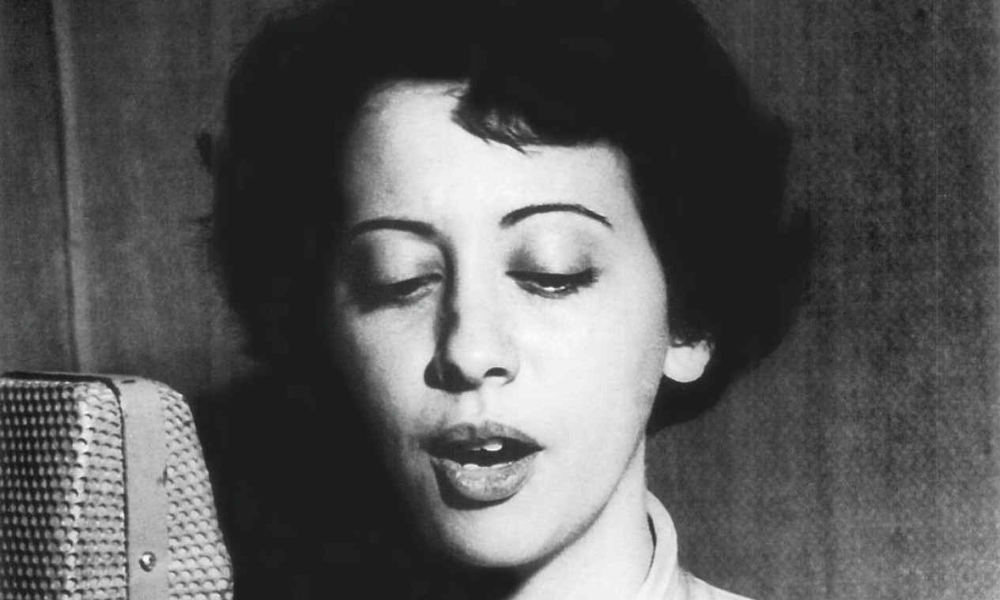
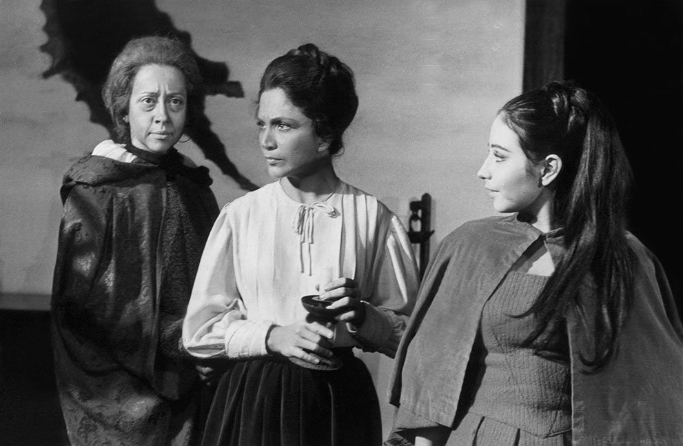

Arlette Pinheiro Esteves da Silva, mais conhecida como Fernanda Montenegro nasceu no bairro do Campinho, subúrbio do Rio de Janeiro em 16 de outubro de 1929. Filha de um mecânico, Vitório Esteves da Silva, e uma dona de casa.
Ingressou nos palcos aos 8 anos, com uma peça na igreja. Após de concluir o curso primário, Arlette dedicou-se à formação para o trabalho, matriculando-se no curso de secretariado Berlitz, que compreendia inglês, francês, português, estenografia e datilografia. Frequentava ainda o curso de madureza à noite, conseguindo concluir o equivalente ao ginasial em dois anos. Aos quinze anos, ainda no terceiro ano do curso técnico de secretariado, inscreveu-se num concurso como locutora na então Rádio Ministério da Educação e Saúde, atual Rádio MEC, fator que foi decisivo para a sua carreira.
Ganhou o concurso para atuar em um projeto chamado "Teatro da Mocidade", voltado a despertar o interesse de jovens talentos para atuar em radionovelas, sendo este seu primeiro emprego. Seu primeiro papel como radioatriz foi numa obra de Cláudio Fornari, chamada Sinhá Moça Chorou, na qual interpretou Manuela. Arlette permaneceu na emissora por dez anos, inicialmente como locutora e depois como atriz. Foi lá que, ao começar a escrever, adotou o pseudônimo "Fernanda Montenegro". Paralelamente, a atriz passou a lecionar português para estrangeiros no Berlitz, curso que havia frequentado por quatro anos. Era a forma de obter alguma remuneração, já que o trabalho no rádio nem sempre era remunerado. A Rádio MEC fica ao lado da Faculdade Nacional de Direito da UFRJ, na qual funcionava um grupo de teatro amador dos alunos da faculdade. Passa a integrar o grupo de teatro, ao participar da peça "Nuestra Natascha", interpretando sua primeira personagem, Cassona.
Sua estreia profissional aconteceu em dezembro de 1950, na peça "3.200 Metros de Altitude", ao lado de Fernando Torres que, além de companheiro de profissão, se tornou seu marido.
Pioneira, Fernanda foi a primeira artista a ser contratada pela antiga TV Tupi, emissora que inaugurou a transmissão televisiva no Brasil em 1950, a atriz participou cerca de 80 peças exibidas nos programas "Retrospectiva do Teatro Universal" e "Retrospectiva do Teatro Brasileiro", no decorrer de dois anos.
Seu primeiro papel em telenovela foi na trama A Muralha, escrita por Ivani Ribeiro, em 1954, e exibida pela RecordTV. Também em 1954, a atriz entrou na Companhia Maria Della Costa e do Teatro Brasileiro de Comédia (TBC). Com Fernando Torres formou sua própria companhia, o Teatro dos Sete com Sergio Britto, Ítalo Rossi, Gianni Ratto, Luciana Petruccelli e Alfredo Souto de Almeida. A estreia do grupo aconteceu em dezembro de 1959, com a peça "O Mambembe", no Theatro Municipal do Rio de Janeiro. De volta ao Rio, a atriz voltou para a Tupi e atuou em mais de 160 peças do Grande Teatro Tupi, de 1956 a 1965. Foi na TV Rio que fez sua estreia nas novelas, em 1963, em "Pouco Amor Não é Amor". Em 1965, participou do programa "4 no Teatro" (1965), na recém criada TV Globo. No ano seguinte, atuou na novela "Calúnia", na Tupi. Em 1967, fez sua estreia na TV Excelsior na novela "Redenção". A trama teve 596 capítulos e se tornou um marco na história da televisão brasileira. A atriz ficou na Excelsior durante três anos e depois se afastou da televisão por nove anos. Durante esses anos, ela atuou em apenas dois trabalhos: no teleteatro "A Cotovia" (1971), da Tupi, e num "Caso Especial da TV Globo, Medéia" (1973). Sua volta à TV foi em "Cara a Cara" (1979), na TV Bandeirantes. Fernanda estreou nas novelas da Globo em "Baila Comigo" (1981), de Manoel Carlos. No mesmo ano, trabalhou em "Brilhante", de Gilberto Braga. Um de seus maiores sucessos na televisão foi na primeira versão de "Guerra dos Sexos" (1983). A atriz protagonizou cenas hilariantes e inesquecíveis ao lado de Paulo Autran, como os primos Charlô e Otávio. Pela novela, Fernanda ganhou o prêmio de Melhor Atriz da Associação Paulista de Críticos de Arte (APCA).
Estreou no cinema com "A Falecida", que lhe deu o prêmio de Melhor Atriz na I Semana do Cinema Brasileiro (Festival de Brasília). Com o longa "Central do Brasil" (1999), Fernanda foi a primeira brasileira indicada ao Oscar e também recebeu o Urso de Prata do Festival de Berlim, entre outros prêmios. Em 1999, Fernanda Montenegro foi condecorada pela Presidência da República com a maior a Grã-Cruz da Ordem Nacional do Mérito, pelo reconhecimento de seus trabalho nas artes cênicas brasileiras. Na época, foi realizada uma exposição no Museu de Arte Moderna (MAM), no Rio de Janeiro, comemorou os 50 anos de carreira da atriz. Em 2013, depois de três aos afastada das novelas, Fernanda voltou ao ar no remake de "Saramandaia". A última trama que a atriz tinha participado era "Passione", em 2010.